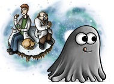

 Жанр:мини-игры, аркады.
Год выхода:2011
Разработчик:ALAWAR
Издатель:ALAWAR
Описание:
Монстрик получился маленький, однако, очень удаленький! Этот смешной глазастик ест на своем пути все, что попадается ему на глаза. А вот от этого он довольно быстро растет. В этой игре вы окунетесь с головой в его захватывающие приключения! А начиналось все с того, что ассистент нашего чудаковатого профессора скормил нашему монстрику пару безобидных конфет. Глазастик моментально проглотил угощение, сообразил в чем смысл его жизни, выкарабкался из своего аквариума и отправился искать себе еду. Что же съедобного можно отыскать в научной лаборатории? Да абсолютно все! Главное, чтобы съедаемые им объекты по размеру были меньше нашего Глазастика. В начале нужно съесть разноцветные пилюли, пробирки, флэшки и всякую мелкую живность. Глазастик-монстрик – существо отнюдь непривередливое, да и гурманом его уж никак не назовешь! Как только наша всеядная обжорка немного подрастет, переключайтесь на всевозможные инструменты и медицинское оборудование. А вот самое вкусное в лаборатории профессора-самоучки – это машина времени! Однако, не все так безоблачно, как может показаться вам на первый взгляд. Глазастик, подобравшись к машине времени, случайно сделал короткое замыкание, частицы хронотонов образовали временную воронку, и нашего монстрика затащила в себя эпоха динозавров. Эта довольно добрая игра – замечательный способ расслабиться и отвлечься от нудной работы. Вместе с монстриком Глазастиком мы побываем в доисторических временах, познакомимся с древнейшими цивилизациями, посетим дивную Страну восходящего солнца, а если совсем повезет – попадем в далекое и таинственное будущее! Всякий раз, когда Глазастик перемещается в машине времени, он становится снова маленьким. Кормите его, старайтесь не соприкасаться с большими предметами, прячьтесь от тех, кто следит и охотится за вами. А вот главная наша цель – осуществить нереализованную мечту нашего профессора – вырастить нашего Глазастика до размеров Галактики!
Скриншоты: